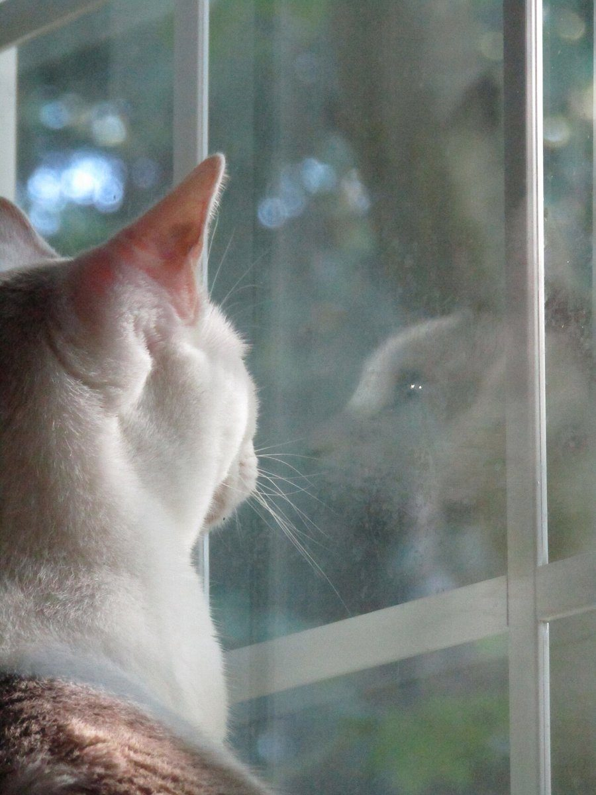
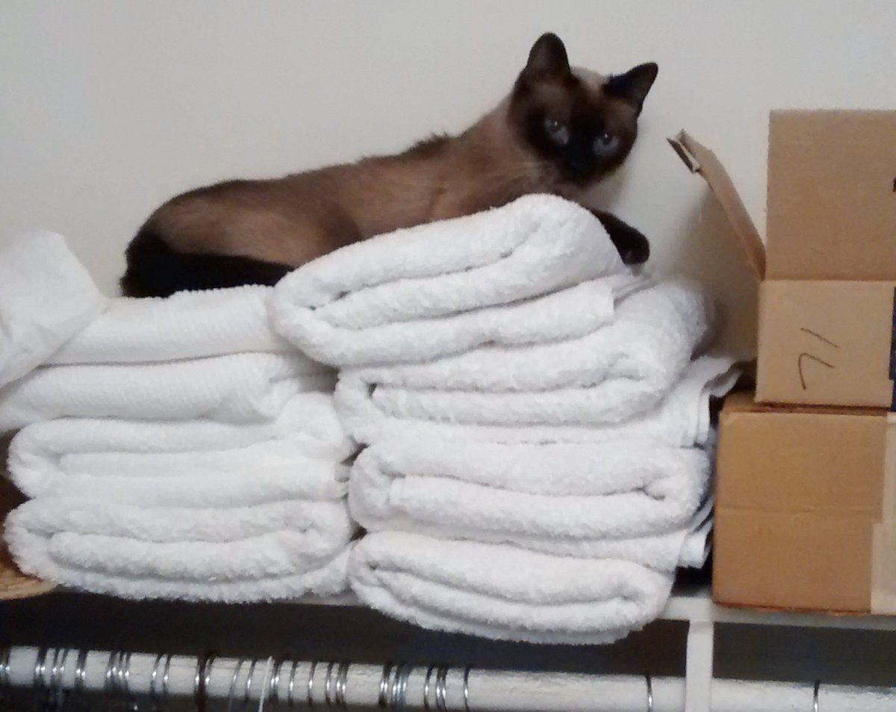

パン屋さん / 愛媛県今治市南鳥生町
しろねこのパン屋さん
愛媛県今治市にある「しろねこのパン屋さん」のご案内ページです。営業時間やパンの種類など、詳しいことはまだ準備中。まずはInstagramをのぞいてみてください。

イメージ
制作側の連想
「白猫」「パン屋さん」「今治」をたたんでみる
店名の由来は分かりません。ここからは、制作側が店名と土地から思いついた連想です(お店の考えとは関係ありません)。白い猫、ふっくらしたパン、そして今治はタオルの産地としても知られるまち。どれも「やわらかくて、ほっとする」ものだと考え、タオルを重ねるようにページを組みました。店とタオルの関係は分かっていません。
ひとつめ
しろねこ
白い毛並みのやわらかさ。窓辺でまるくなる姿を思い浮かべました。実際の店のねこの話ではありません。

ふたつめ
パン屋さん
どんなパンが並ぶかは準備中のため、ここでは焼き色や、ふくらみのイメージだけを並べています。


みっつめ
今治
瀬戸内のしまなみ海道の入口にあたり、タオルの産地として知られるまちです。色とりどりのタオルを積んだ写真は、店のカラーではなく「連想のしるし」として置きました。
ご案内
お店のこと(確認できたものだけ)
| 所在地 | 〒794-0802 愛媛県今治市南鳥生町2丁目1-5 |
|---|---|
| 電話 | なし |
| 営業時間 | 準備中 |
| 定休日 | 準備中 |
| ご予約 | 準備中 |
| 駐車場 | 準備中 |
| SNS | Instagram @shironeko_2025 |